H3 Heading
MU blue, 1.5rem, gold bottom border.
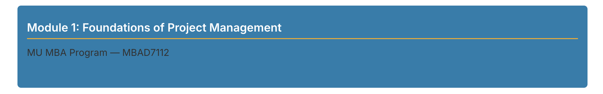
HTML
<h3>Module 1: Foundations of Project Management</h3>Visual reference for course authors and IDs. Every component below shows the rendered result on the left and the HTML source on the right.
MU blue, 1.5rem, gold bottom border.

<h3>Module 1: Foundations of Project Management</h3>H4 is MU blue at 1.25rem with no border. Lists are indented in MU text colour.
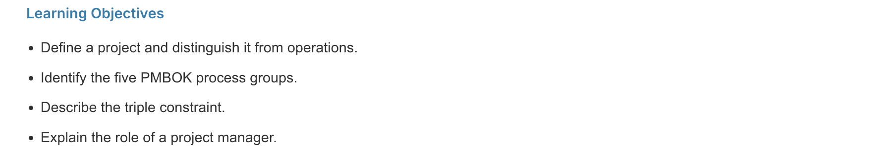
<h4>Learning Objectives</h4>
<ul>
<li>Define a project and distinguish it from routine operations.</li>
<li>Identify the five process groups in the PMBOK framework.</li>
<li>Describe the triple constraint of scope, time, and cost.</li>
<li>Explain the role and responsibilities of a project manager.</li>
</ul>H5 is MU blue at 1.1rem. Paragraphs use dark grey, max 72ch. Links are MU link blue.
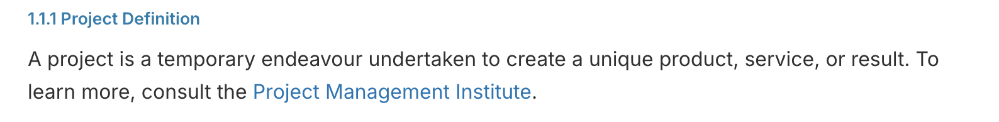
<h5>1.1.1 Project Definition</h5>
<p>
A project is a temporary endeavour undertaken to create a unique
product, service, or result. To learn more, consult the
<a href="https://www.pmi.org/">Project Management Institute</a>.
</p>When a link is focused via keyboard, a 3px gold outline is drawn with a 2px offset.
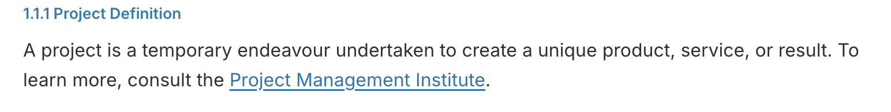
Focus outline is applied automatically by the CSS.
To test: press Tab until the link is focused.
Do not override outline styles in your content.Blue left border, light grey background.
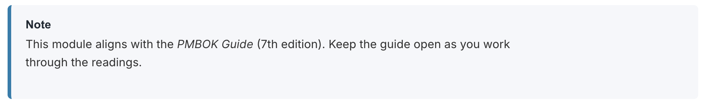
<div class="mba-callout mba-note">
<span class="mba-callout-title">Note</span>
<p>
This module is aligned with the PMBOK Guide (7th edition). Please
keep the guide open as you work through the readings and activities.
</p>
</div>Definition: pale blue. Example: pale grey. Important: pale yellow with gold border.
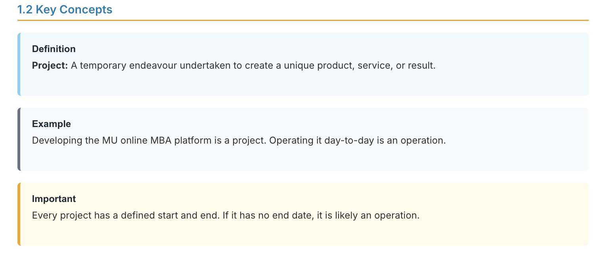
<div class="mba-callout mba-definition">
<span class="mba-callout-title">Definition</span>
<p>
<strong>Project:</strong> A temporary endeavour undertaken to
create a unique product, service, or result.
</p>
</div>
<div class="mba-callout mba-example">
<span class="mba-callout-title">Example</span>
<p>
Developing the MU online MBA platform is a project. Operating
it day-to-day is an operation.
</p>
</div>
<div class="mba-callout mba-important">
<span class="mba-callout-title">Important</span>
<p>
Every project has a defined start and end. If it has no end date,
it is likely an operation.
</p>
</div>Warning: red border. Code block: monospace. Quote: blue left border. Success: green. Error: red.
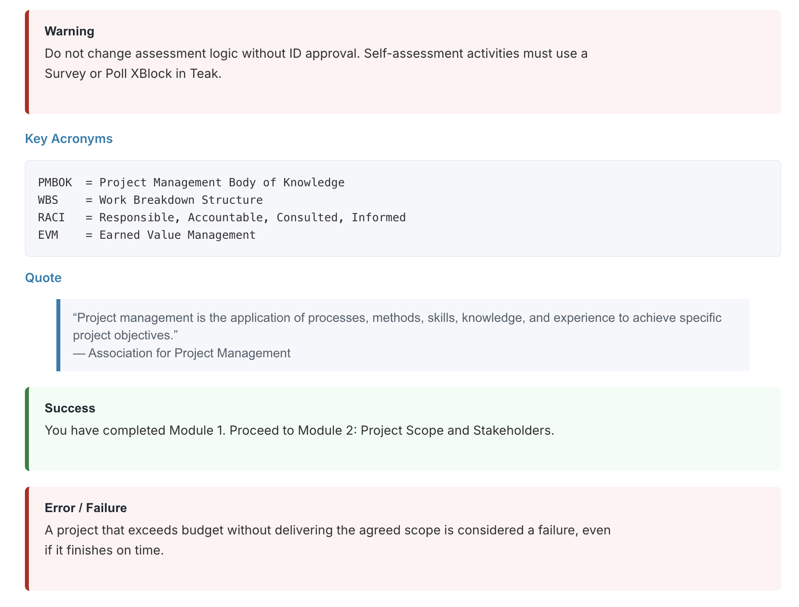
<div class="mba-callout mba-warning">
<span class="mba-callout-title">Warning</span>
<p>
Do not change assessment logic without ID approval. Self-assessment
activities must use a Survey or Poll XBlock in Teak.
</p>
</div>
<h4>Key Acronyms</h4>
<pre><code>PMBOK = Project Management Body of Knowledge
WBS = Work Breakdown Structure
RACI = Responsible, Accountable, Consulted, Informed
EVM = Earned Value Management
</code></pre>
<h4>Quote</h4>
<blockquote>
“Project management is the application of processes, methods, skills,
knowledge, and experience to achieve specific project objectives.”
<br>— Association for Project Management
</blockquote>
<div class="mba-callout mba-success">
<span class="mba-callout-title">Success</span>
<p>
You have completed Module 1. Proceed to Module 2: Project Scope and
Stakeholders.
</p>
</div>
<div class="mba-callout mba-error">
<span class="mba-callout-title">Error / Failure</span>
<p>
A project that exceeds budget without delivering the agreed scope is
considered a failure, even if it finishes on time.
</p>
</div>MU blue header, white header text, alternating grey rows, MU caption.
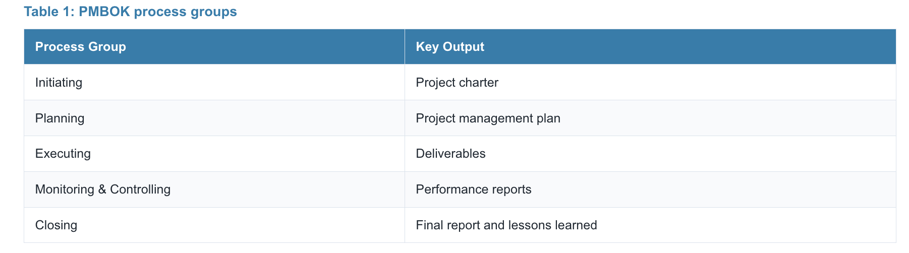
<table class="mba-table">
<caption>Table 1: PMBOK process groups</caption>
<thead>
<tr>
<th scope="col">Process Group</th>
<th scope="col">Key Output</th>
</tr>
</thead>
<tbody>
<tr><td>Initiating</td><td>Project charter</td></tr>
<tr><td>Planning</td><td>Project management plan</td></tr>
<tr><td>Executing</td><td>Deliverables</td></tr>
<tr><td>Monitoring & Controlling</td><td>Performance reports</td></tr>
<tr><td>Closing</td><td>Final report and lessons learned</td></tr>
</tbody>
</table>Centred figure with muted grey caption.
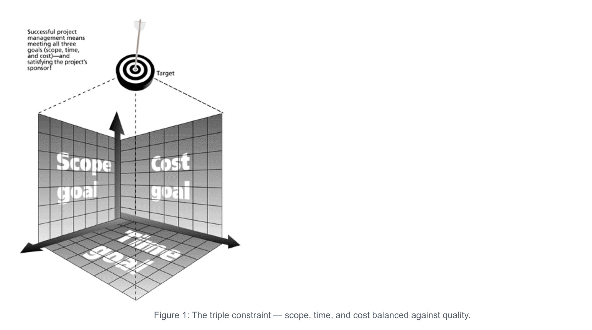
<figure class="mba-figure">
<img src="/static/triple-constraint.png"
alt="Diagram of the triple constraint showing scope, time, and cost.">
<figcaption class="mba-caption">
Figure 1: The triple constraint — scope, time, and cost balanced
against quality.
</figcaption>
</figure>White card with MU border. Primary, success and warning badges. MU blue progress bar.
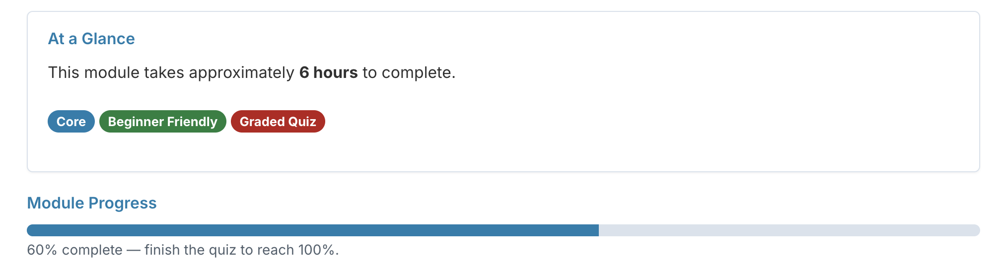
<div class="mba-card">
<h4>At a Glance</h4>
<p>This module takes approximately <strong>6 hours</strong> to complete.</p>
<p>
<span class="mba-badge mba-badge-primary">Core</span>
<span class="mba-badge mba-badge-success">Beginner Friendly</span>
<span class="mba-badge mba-badge-warning">Graded Quiz</span>
</p>
</div>
<h4>Module Progress</h4>
<div class="progress">
<div class="progress-bar" style="width: 60%;"></div>
</div>
<p><small>60% complete — finish the quiz to reach 100%.</small></p>Light background with MU border, monospace font.

<p>
The attribute <code>correct="true"</code> must not be set on every
<code><choice></code> element in a Teak multiple-choice problem.
</p>Top border, hanging indent, muted text.
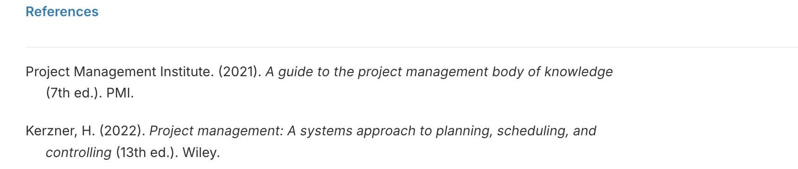
<div class="mba-reference">
<p>
Project Management Institute. (2021).
<em>A guide to the project management body of knowledge</em>
(7th ed.). PMI.
</p>
<p>
Kerzner, H. (2022).
<em>Project management: A systems approach to planning,
scheduling, and controlling</em> (13th ed.). Wiley.
</p>
</div>Native Open edX component. MU border and gold left accent applied automatically.
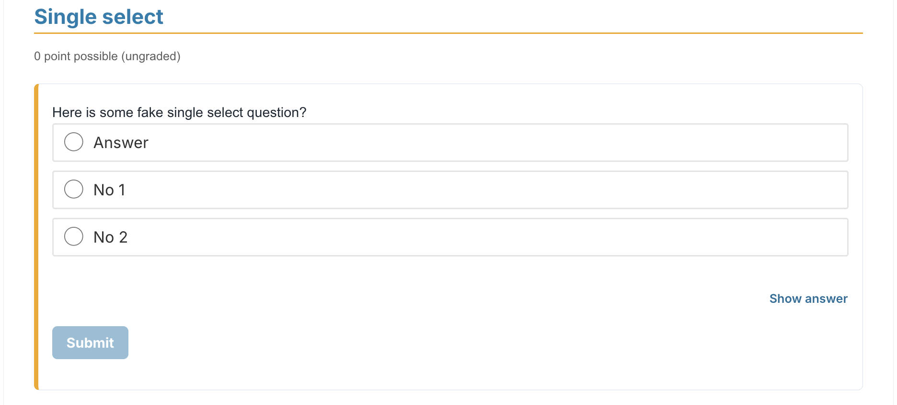
Add via: Add New Component -> Problem -> Single Select.
The MU branded wrapper and blue submit button are applied
automatically by the course-wide CSS. Do not add extra classes.Native Open edX component.
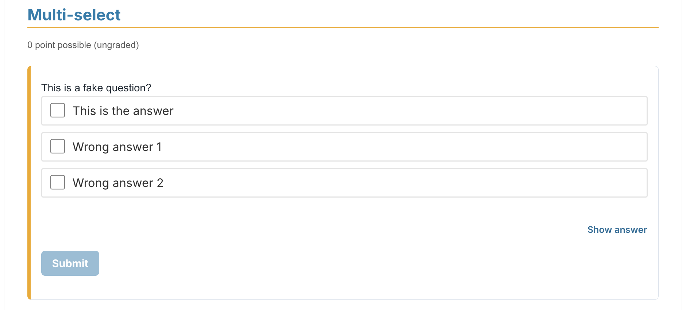
Add via: Add New Component -> Problem -> Checkboxes.
Teak note: do not mark all choices correct. Only the first correct
choice awards a point. Use Survey or Poll for self-assessment.Native Open edX component. Use for self-assessment.
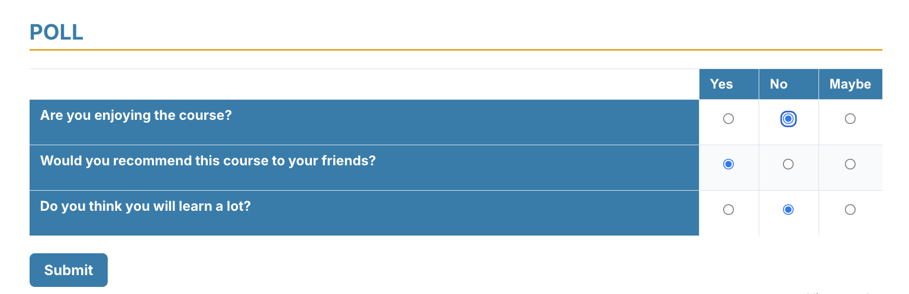
Add via: Add New Component -> Poll.
Use Poll for self-assessment when there is no single correct answer
(or when all answers are correct).Native Open edX component. MU-branded wrapper and buttons.
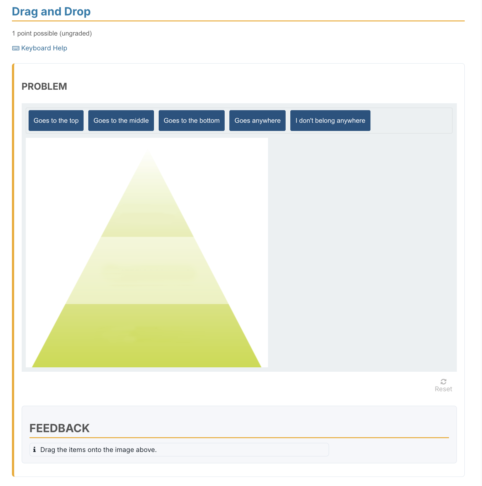
Add via: Add New Component -> Drag and Drop.
Make sure every draggable item has a clear label, and provide
alt text on the background image.Native Open edX component.

Add via: Add New Component -> Survey.
Use Survey when you want to collect opinions rather than score
correct answers. This is the recommended replacement for all-correct
multiple choice self-assessments in Teak.MU border and rounded corners applied to the video iframe. Always provide captions and transcripts.
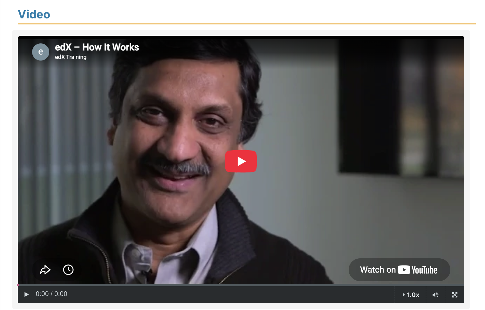
Add via: Add New Component -> Video.
Use YouTube unlisted or private videos. Provide captions and a
transcript for every video (WCAG 2.1 AA).MU border and rounded corners applied to threads and comments.

Add via: Add New Component -> Discussion.
Write a clear prompt. Do not manually style the discussion.Correct feedback: green. Incorrect feedback: red. Both use the MU branded wrapper.
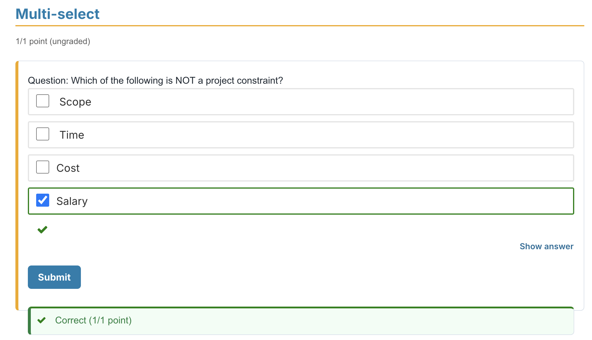
Feedback colours are applied automatically by the course-wide CSS
when you configure the problem's correct and incorrect feedback
in Studio. Do not hard-code colours in the problem XML.